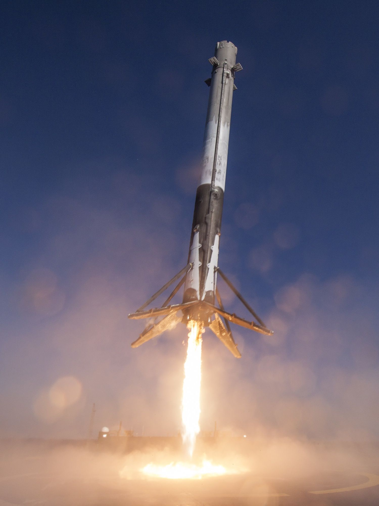

A project to take off and propulsively land a model scale rocket similar to the SpaceX Falcon 9
I have always been amazed the engineering feat that SpaceX accomplishes each time they launch a Falcon 9 rocket and land it on a barge in the ocean. I make a point to watch pretty much every single launch they stream. I recently came across Joe Barnard with BPS Space and his project to land a model rocket. It inspired me to try it myself. Being a novice at model rocketry, I have much to learn.
The scope of this project is large enough, I will split the project into two projects. The first is to build and implement a thrust vector control system for a model rocket. This will initially use standard powder engines. The second would be development of the throttle-able rocket engine capable of the thrust needed. Then the throttle-able rocket engine will be put in the model rocket
Mini Falcon 9 Rocket Engine